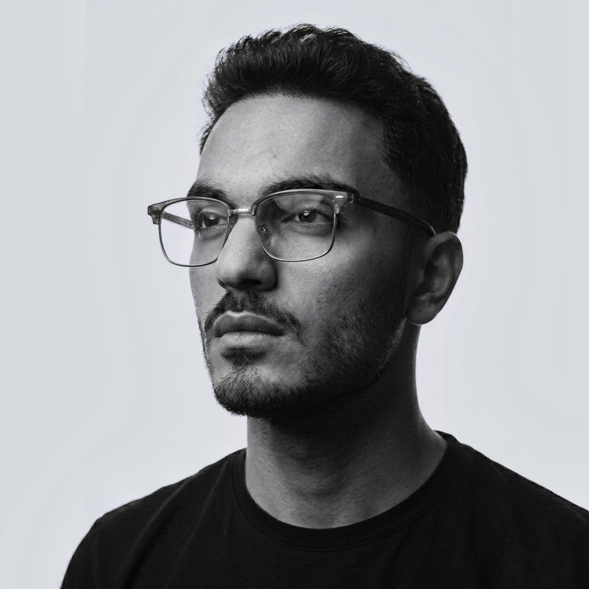

İşletmeniz için premium satış sistemleri.
Sosyal medyanızı ciro üreten bir satış makinesine dönüştürüyoruz. Markanızın dijital serüvenine başından sonuna kadar eşlik ediyor, sizi hizmetinizin değerini bilecek o doğru müşterilerle buluşturuyoruz.
Sosyal medyanızı, işçiliğinizin ve vizyonunuzun kalitesini yansıtan premium bir vitrine dönüştürüyoruz. Müşterinin size güvenmesi için gereken otoriteyi inşa ediyoruz.
Karmaşık panellerle değil, stratejiyle çalışıyoruz. Fiyat sorup kaçanları değil, hizmetinizin değerini bilecek o "doğru ve kaliteli" müşteriyi filtreleyip size getiriyoruz.
Meta Reklam Uzmanı: Abdullah Aslangöz ↗Her işletmenin dinamiği farklıdır. İhtiyacınızı analiz ediyor ve size özel yapay zeka otomasyonları entegre ediyoruz. Süreçleri hızlandıran bu dokunuşlarla doğrudan ciro artışı sağlıyoruz.
Her markanın finansal verisi ve büyüme stratejisi en değerli mahremidir. İş ortaklarımıza duyduğumuz saygı gereği, ciro rakamlarını veya reklam panellerini web sitemizde basit bir pazarlama aracı olarak sergilemiyoruz.
Bunun yerine; birebir görüşmemizde işin matematiğini, kurduğumuz sistemlerin çalışma mantığını ve işletmenize özel potansiyel büyüme senaryolarını sizinle birlikte değerlendiriyoruz.
10 yaşımdan beri sosyal medya algoritmalarının ve dijitalin gelişimiyle birlikte, bu dünyanın tam içinde büyüyorum. Benim uzmanlığım sadece platformları bilmek değil; bu organik gücü kusursuz işleyen, öngörülebilir satış sistemlerine çevirebilmek.
Sosyal medyadaki o görünmeyen detayları birleştiriyor ve işletmeniz için yorulmayan bir müşteri kazanım ağı inşa ediyorum. Kurduğumuz bu sistemler sayesinde, halihazırda birçok markayla omuz omuza çalışarak sürdürülebilir büyüme ve başarı elde ediyoruz.

30 dakikalık ücretsiz görüşme planlayarak markanıza özel neler yapabileceğimizi beraber konuşabiliriz.
Ücretsiz Görüşme Planla